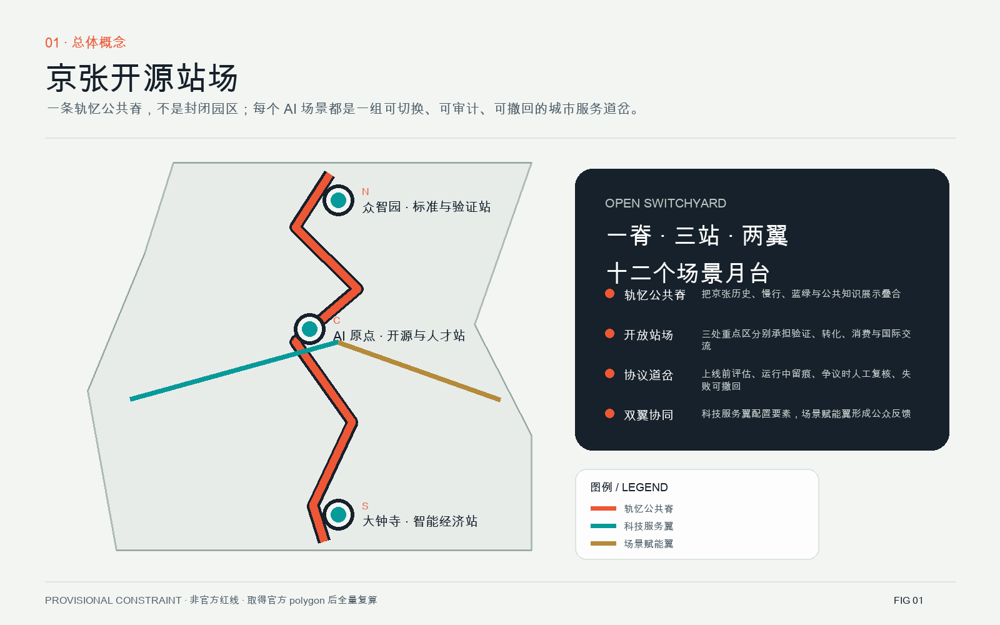
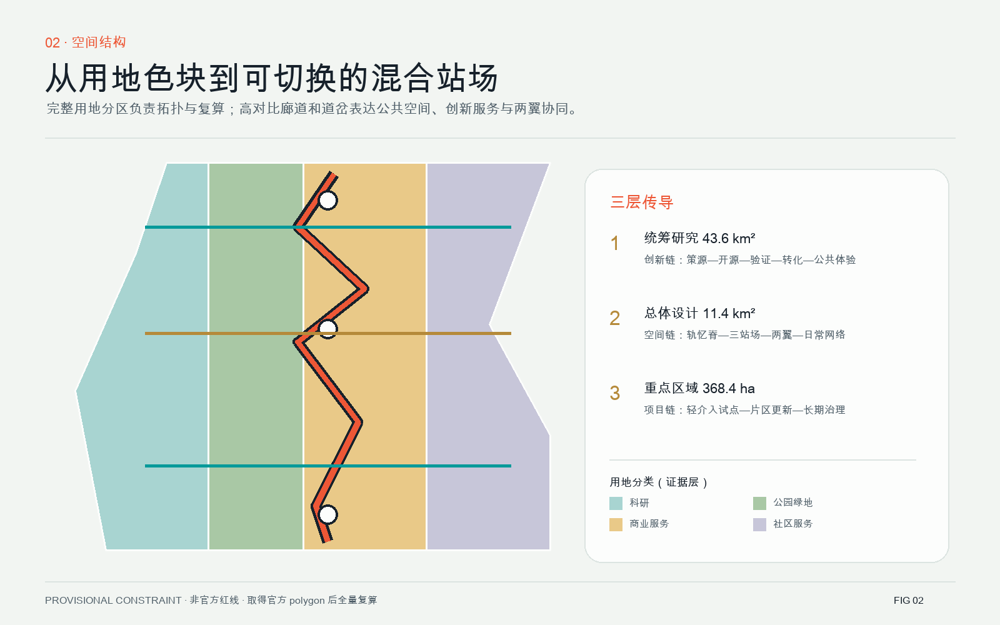
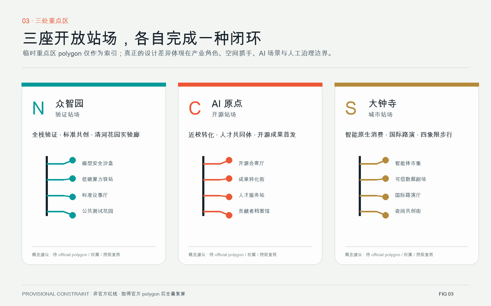
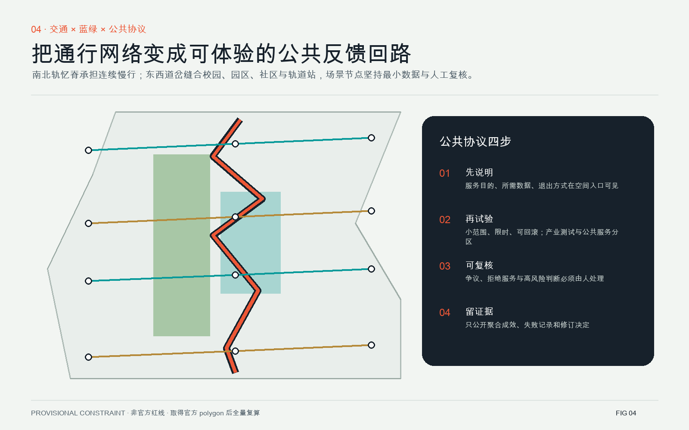
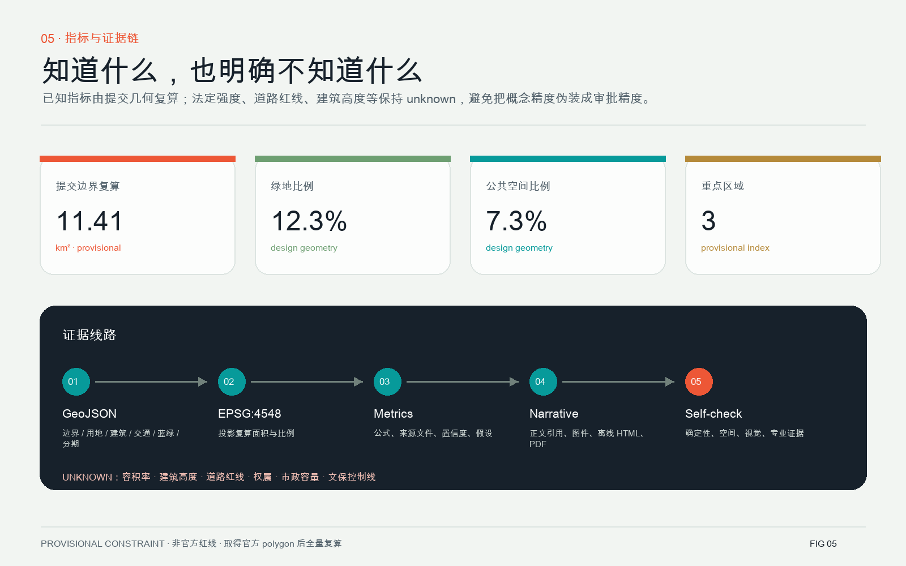

众智园 · 验证站场
模型安全沙盒、标准议事厅、低碳算力驿站与清河花园实验廊。
把百年铁路的“道岔”变成城市 AI 公共协议：服务可以切换，决定可以复核，失败可以撤回，贡献可以被记住。
所有空间内容均为概念建议，可供专业团队深化研究；当前采用 provisional boundary，不构成官方红线或政府审定结论。


统筹研究范围组织创新链，总体设计范围组织公共脊与站场，重点区域把每种机制压实到空间、运营和人工治理边界。建筑、更新项目、交通和市政只提出概念策略，待正式资料复核。
模型安全沙盒、标准议事厅、低碳算力驿站与清河花园实验廊。
开源会客厅、成果转化街、人才服务站与贡献者档案馆。
智能体市集、可信数据剧场、国际路演厅与四象限步行缝合。


代码贡献、成果发布与小型路演；贡献展示须经本人同意。
产业测试验证；隔离环境、到期删除、人工签署。
产业测试验证；能耗与安全条件待专业核算。
公共服务；只处理即时位置，不形成个人轨迹。
公共体验；聚合环境数据与人工维护。
高校成果、法务与知识产权服务的可预约界面。
产业测试验证；合成或授权数据、全程审计。
对比体验智能服务，明确非人工主体与责任方。
教育、医疗、法律信息解释，关键决定转人工。
史料来源可追溯，争议内容由文化专业人员复核。
自愿、可撤回、可更正的城市创新贡献记录。
概念活动网络，将参观、协作、测试和转化串联。

任务覆盖：公告 1.3、1.4、1.5 与 agent.1—agent.6 均映射至正文、图层、指标、图纸和矩阵。
自检状态：本页展示包经 finalize 后运行 deterministic、spatial、visual、professional evidence 四类检查；最终结果以 self_check.json 为准。
正式任务依据：海淀分局官方公告、清权智能体任务书、城市设计管理办法、控规编制审批办法、国土空间用地分类指南。
临时空间依据：仓库 provisional boundaries，仅用于生成、展示和 intake 自检。
主要假设：官方红线、重点区 polygon、道路红线、现状建筑、权属、控规、市政、消防、文保控制线与公共服务底数尚未提供。
替换规则：官方数据到位后，必须同时替换边界与重点区，并重生成 land use、buildings、roads、green/public space、phasing、metrics、五张图、HTML 与两套 PDF。